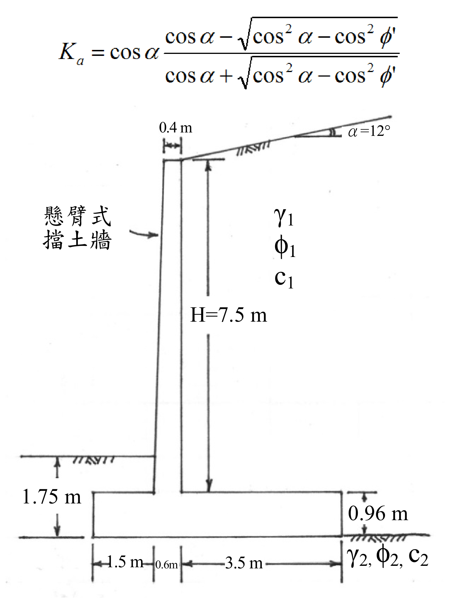
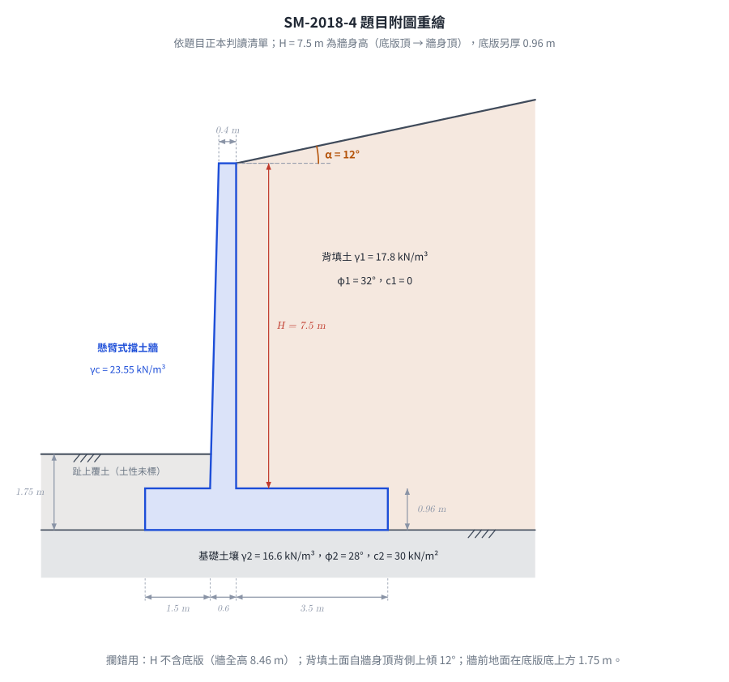
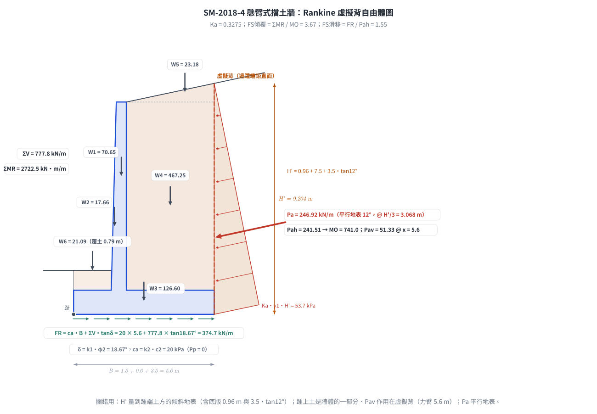

📄 題目正本：考卷原文・附圖・判讀清單（已確認）
SM-2018-4 題目正本
本檔只記錄考卷上寫了什麼、圖上畫了什麼，不含任何解法。解析見同資料夾
SM-2018-4.md。
判讀清單已確認（凍結）；本檔原則上不再修改（改動須回考卷原圖並記 log）。
| 項目 | 內容 |
|---|---|
| 考卷 | raw/exams/SM-2018_土壤力學與基礎設計.pdf 第 2 頁（頁次 2－2），第四題 |
| 考年 | 民國 107 年（2018） |
| 配分 | 25 分（㈠13、㈡12） |
| 附圖 | SM-2018-4-fig-2.png（$K_a$ 公式＋手繪懸臂式擋土牆剖面；2026-11-15 由考卷重新擷取 500 dpi）；既有 SM-2018-4-fig-1.png 為同一圖，滑鼠游標壓在 $K_a$ 的下標上，保留不刪 |
| 判讀狀態 | 已確認（2026-11-15 關卡一：使用者授權依建議判讀確認；轉錄 2026-11-15；PyMuPDF 110 dpi 全頁目視；附圖為內嵌點陣影像 620×694 px，原解析度取出並 450 dpi 放大；盲讀後才比對既有解析） |
1. 考卷原文（逐字）
四、某一懸臂式擋土牆如下圖所示，牆高 H = 7.5 m，背填土傾角 α = 12°。土壤性質：單位重 γ1 = 17.8 kN/m³、有效內摩擦角 φ1 = 32°、有效凝聚力 c1 = 0 kN/m²、單位重 γ2 = 16.6 kN/m³、有效內摩擦角 φ2 = 28°、有效凝聚力 c2 = 30 kN/m²。假設混凝土單位重 γc = 23.55 kN/m³，被動土壓合力 Pp = 0 kN/m，基礎底面之介面有效內摩擦角及有效凝聚力折減係數 k1 = k2 = 2/3。依據藍金（Rankine）土壓力理論，請計算此擋土牆的：
㈠抗傾覆安全係數。（13 分）
㈡抗滑移安全係數。（12 分）
2. 考卷給的公式、附表與參數
- 題目印出的公式（附圖上方）：
$$K_a=\cos\alpha\,\frac{\cos\alpha-\sqrt{\cos^2\alpha-\cos^2\phi'}}{\cos\alpha+\sqrt{\cos^2\alpha-\cos^2\phi'}}$$
- 背填土（圖上標於牆後）：$\gamma_1$ = 17.8 kN/m³、$\phi_1$ = 32°、$c_1$ = 0。
- 基礎土壤（圖上標於底版底面右側）：$\gamma_2$ = 16.6 kN/m³、$\phi_2$ = 28°、$c_2$ = 30 kN/m²。
- 混凝土 $\gamma_c$ = 23.55 kN/m³；被動土壓合力 $P_p$ = 0；基礎底面介面摩擦角與凝聚力的折減係數 $k_1 = k_2 = 2/3$。
- 幾何（圖）：牆身頂寬 0.4 m、牆身底寬 0.6 m、$H$ = 7.5 m、底版厚 0.96 m、趾長 1.5 m、踵長 3.5 m、牆前地面至底版底 1.75 m、背填土傾角 $\alpha$ = 12°。
- 沒有給：牆前（趾上）覆土的土性、安全係數要求值、地下水位、$k_1$／$k_2$ 是乘在角度上或乘在 $\tan$ 上的明文。
- 卷首注意事項：㈠可以使用電子計算器。㈡不必抄題，作答時請將試題題號及答案依照順序寫在試卷上，於本試題上作答者，不予計分。㈢本科目除專門名詞或數理公式外，應使用本國文字作答。
3. 附圖

圖面文字照錄：Ka = cosα (cosα − √(cos²α − cos²φ'))/(cosα + √(cos²α − cos²φ'))、0.4 m、α=12°、懸臂式擋土牆、γ1、φ1、c1、H=7.5 m、1.75 m、0.96 m、1.5 m、0.6 m、3.5 m、γ2, φ2, c2。
4. 判讀清單
| # | 項目 | 判讀 | 圖上／題文依據 | 把握 |
|---|---|---|---|---|
| 1 | 趾上覆土 | 牆前地面在底版底上方 1.75 m，趾上覆土厚 1.75 − 0.96 = 0.79 m；圖上未標此土的土性。$P_p$ = 0 只排除被動土壓，未說覆土重。建議：主線計入趾上覆土重（題目在 $P_p$ = 0 下仍標 1.75 m，此尺寸唯一用途即覆土重），單位重取 $\gamma_1$（回填土；改用 $\gamma_2$ 差不到 0.2%），另以不計覆土對照 | 附圖 1.75 m 尺寸線上端對齊牆前地面線、下端對齊底版底 | 不確定（影響答案）；使用者授權依建議確認 |
| 2 | $H$ = 7.5 m 量到哪裡 | 牆身高：由牆身頂量到底版頂面，不含底版厚 0.96 m（牆全高 8.46 m） | 原影像：尺寸線上端在牆身頂橫向引線（y ≈ 78 px），下端箭頭 y ≈ 545 px，底版頂線 y ≈ 547 px、底版底 y ≈ 607 px | 確定（解讀） |
| 3 | 牆身 | 頂寬 0.4 m、底寬 0.6 m；牆背（右）鉛直、牆面（左）傾斜 | 原影像：牆背線 x ≈ 247 px 上下一致；牆面線 x ≈ 222 → 210 px（比例約 62 px/m，與 0.4、0.6 m 相符） | 確定 |
| 4 | 底版 | 厚 0.96 m（右側尺寸線上端在底版頂、下端在底版底）；趾長 1.5 m、踵長 3.5 m，底版全寬 1.5 + 0.6 + 3.5 = 5.6 m | 附圖下方與右側尺寸線 | 確定 |
| 5 | 背填土面 | 自牆身頂背側起以 $\alpha$ = 12° 向背填側上傾，延伸越過踵端 | 附圖 | 確定 |
| 6 | 背填土 | $\gamma_1$ = 17.8、$\phi_1$ = 32°、$c_1$ = 0（標於牆後） | 題文＋附圖 | 確定 |
| 7 | 基礎土壤 | $\gamma_2$ = 16.6、$\phi_2$ = 28°、$c_2$ = 30 kN/m²（標於底版底面右側地面線下） | 題文＋附圖 | 確定 |
| 8 | 底面介面參數 | 摩擦角 $\delta = k_1\phi_2$、黏著力 $c_a = k_2 c_2$（折減係數乘在 $\phi_2$、$c_2$ 本身） | 題文「介面有效內摩擦角及有效凝聚力折減係數」 | 確定（解讀） |
| 9 | 被動土壓 | $P_p$ = 0（題目指定） | 題文 | 確定 |
| 10 | 指定理論 | Rankine，$K_a$ 公式照考卷（傾斜地表） | 題文＋附圖上方公式 | 確定 |
| 11 | 所求 | ㈠抗傾覆安全係數、㈡抗滑移安全係數（不問承載力） | 題文 | 確定 |
| 12 | 考卷沒有給 | 趾上覆土土性、安全係數要求值、地下水位（未提及，視為無水） | 全題 | 確定 |
轉錄：2026-11-15（SM-U3-2 題目正本推廣・批 1）
確認：2026-11-15 使用者授權依建議判讀確認（SM-U3-2 題目正本推廣・批 1，關卡一；使用者指示「要確認的依你建議」）
考題編號：SM-2018-4
主分類： SM-U3-2 擋土結構物穩定分析
副分類： SM-U3-1 側向土壓力理論
分析法： 有效應力法
標籤： 懸臂式擋土牆 Rankine主動土壓力 抗傾覆 抗滑動 虛擬牆背 傾斜背填土 安全係數
1. 題目（考卷原文見題目正本）
考卷原文、公式／附表、附圖與判讀清單（已確認）見
SM-2018-4-problem.md。本節只列解題時最容易讀錯的地方與本解使用的記號；題意以題目正本為準。

重繪自考卷附圖，依題目正本判讀清單 #1–#7；攔下的判讀錯誤：$H$ = 7.5 m 是牆身高，不含底版 0.96 m；1.75 m 量到底版底，趾上覆土厚 0.79 m。
常見誤讀
| 項目 | 正確判讀 | 常見誤讀 |
|---|---|---|
| $H$ 量到哪裡 | 牆身高：底版頂 → 牆身頂，不含底版 0.96 m（牆全高 8.46 m）（題目正本 #2） | 把 7.5 m 當牆全高（含底版） |
| 背填土面 | 自牆身頂背側以 12° 上傾，越過踵端（#5） | 以為由踵端才開始傾斜 |
| 趾上覆土 | 厚 1.75 − 0.96 = 0.79 m；主線計入覆土重、單位重取 $\gamma_1$（#1，已確認；改用 $\gamma_2$ 差不到 0.2%） | 把 1.75 m 當覆土厚，或因 $P_p$ = 0 連覆土重一起略去而不說明 |
| 介面參數 | $\delta = k_1\phi_2$、$c_a = k_2 c_2$（#8） | 寫成 $\tan\delta = k_1\tan\phi_2$ 而不說明 |
本解記號： $H$ 牆身高 7.5 m；$H'$ 通過踵端的虛擬牆背高；$K_a$ 傾斜地表 Rankine 係數（考卷給式）；$P_a$ 主動土壓力；$k_1$、$k_2$ 介面折減係數；$FS_{OT}$、$FS_{SL}$ 抗傾覆、抗滑移安全係數。
2. 考題核心精神與出題者意圖 (Core Concepts & Examiner's Intent)
- 虛擬破壞面的建立：考驗 Rankine 理論應用於懸臂式擋土牆時的標準處理手法，亦即從牆踵（Heel）末端垂直向上建立「虛擬牆背」，並將虛擬牆背與牆身之間的土壤視為擋土牆的一部分。
- 傾斜土壓力的分量：檢驗傾斜背填土情況下，主動土壓力 $P_a$ 作用於虛擬面上會與水平面夾 $\alpha$ 角（12度），其垂直分量 $P_{ay}$ 對抗傾覆與抗滑動有正面貢獻，不可忽略。
- 介面參數折減：測試基底摩擦角 $\delta$ 與附著力 $c_a$ 的計算，透過折減係數 $k_1, k_2$ 正確求出抗滑移強度。
3. 解題戰略地圖與陷阱分析 (Strategic Roadmap & Trap Analysis)
- 步驟一：幾何計算。求出擋土牆底版總寬度 $B$，以及牆踵處虛擬垂直面的總高度 $H'$（需計入莖高、版厚及傾斜地表增加的高度）。
- 步驟二：主動土壓力計算。代入題目給定的 Rankine 傾斜背填土公式計算 $K_a$，再求出總推力 $P_a$ 及其水平分量 $P_{ax}$ 與垂直分量 $P_{ay}$。
- 步驟三：穩定分析列表。將牆身混凝土、牆上覆土切割為數個簡單幾何區塊，計算各區塊重量（$W$）與對牆趾的力臂（$x$），求得總垂直力 $\Sigma V$ 及抵抗傾覆力矩 $\Sigma M_R$。
- 步驟四：計算安全係數。
- 傾覆：$FS_{OT} = \Sigma M_R / M_O$
- 滑移：$FS_{SL} = \Sigma F_R / P_{ax}$
陷阱分析：
- 虛擬平面高度陷阱：題目標示的 $H=7.5\text{ m}$ 僅為「牆莖高度」。計算土壓力時，必須加上基礎版厚度 $0.96\text{ m}$，以及踵部上方因地表傾斜產生的額外高度 $3.5 \times \tan 12^\circ$。
- 牆趾覆土：牆趾上方有 $1.75\text{ m}$（至版底）的覆土，扣除版厚 $0.96\text{ m}$ 後有 $0.79\text{ m}$ 覆土，此部分重量會提供抵抗力矩，在詳細分析時應予計入（保守設計中偶爾忽略，但考試通常建議計入）。
- 介面摩擦角：題目敘述「有效內摩擦角...折減係數」，應取 $\delta = k_1 \phi_2$，而非對 $\tan\phi_2$ 進行折減。
3.5 變數層次分析 (Variable Hierarchy Analysis)
最終目標
計算懸臂式擋土牆的抗傾覆安全係數 $FS_{OT}$ 與抗滑移安全係數 $FS_{SL}$。
本題關鍵公式（依計算順序）
- 虛擬牆背高度：$H' = H + H_{base} + B_{heel} \tan\alpha$
- 主動土壓力係數：$K_a = \cos\alpha \frac{\cos\alpha - \sqrt{\cos^2\alpha - \cos^2\phi_1}}{\cos\alpha + \sqrt{\cos^2\alpha - \cos^2\phi_1}}$
- 總主動土壓力：$P_a = \frac{1}{2} \gamma_1 \boxed{H'}^2 \boxed{K_a}$
- 傾覆力矩：$M_O = ( \boxed{P_a} \cos\alpha ) \times \frac{\boxed{H'}}{3}$
- 抗傾覆安全係數：$FS_{OT} = \frac{\Sigma M_R}{\boxed{M_O}}$
- 抗滑移安全係數：$FS_{SL} = \frac{k_2 c_2 B + (\Sigma V) \tan(k_1 \phi_2)}{\boxed{P_a} \cos\alpha}$
L1：題目直接給定
| 符號 | 數值 | 說明 |
|---|---|---|
| $H$ | $7.5 \text{ m}$ | 擋土牆莖部高度 |
| $H_{base}$ | $0.96 \text{ m}$ | 基礎版厚度 |
| $\alpha$ | $12^\circ$ | 背填土傾角 |
| $\gamma_1$ | $17.8 \text{ kN/m}^3$ | 背填土單位重 |
| $\phi_1$ | $32^\circ$ | 背填土有效內摩擦角 |
| $\gamma_2$ | $16.6 \text{ kN/m}^3$ | 基礎土壤單位重 |
| $\phi_2$ | $28^\circ$ | 基礎土壤有效內摩擦角 |
| $c_2$ | $30 \text{ kN/m}^2$ | 基礎土壤有效凝聚力 |
| $\gamma_c$ | $23.55 \text{ kN/m}^3$ | 混凝土單位重 |
| $k_1, k_2$ | $2/3$ | 摩擦角與凝聚力折減係數 |
L2：需知識點推導
| 符號 | 公式／來源 | 卡關? |
|---|---|---|
| 虛擬背面與土壓力 | ||
| $H'$ | 虛擬牆背高度 | |
| $K_a$ | Rankine 傾斜地表主動土壓力係數 | |
| $P_{ax}, P_{ay}$ | 主動土壓力之水平與垂直分量 | |
| 穩定性分析 | ||
| $\Sigma V, \Sigma M_R$ | 分塊計算自重與抵抗力矩 | |
| $FS_{OT}$ | $\Sigma M_R / M_O$ | |
| $FS_{SL}$ | 抵抗滑動力 / $P_{ax}$ |
L3：深層知識（不懂就卡住）
| 知識點 | 說明 | 卡關? |
|---|---|---|
| Rankine 懸臂牆分析法 | 需在牆踵處建立垂直虛擬平面，虛擬平面與牆身之間的土壤視為牆體一部分。 | |
| 傾斜地表之 $P_a$ 方向 | Rankine 土壓力作用於虛擬垂直面上，方向與地表平行（夾 $\alpha$ 角）。 |
4. 步驟化詳細計算過程 (Step-by-Step Detailed Calculation)
Step 1: 幾何參數與虛擬牆背高度計算
由題圖可知：
- 牆趾長 $B_{toe} = 1.5 \text{ m}$
- 莖部底寬 $B_{stem} = 0.6 \text{ m}$
- 牆踵長 $B_{heel} = 3.5 \text{ m}$
- 總底寬 $B = 1.5 + 0.6 + 3.5 = 5.6 \text{ m}$
Rankine 分析法建立過牆踵末端之垂直虛擬平面，其高度 $H'$ 為：
$$ H' = H + H_{base} + B_{heel} \tan\alpha = 7.5 + 0.96 + 3.5 \times \tan(12^\circ) $$
$$ H' = 8.46 + 3.5 \times 0.21256 = 8.46 + 0.744 = 9.204 \text{ m} $$
Step 2: 主動土壓力計算
代入題目給定的 Rankine 主動土壓力係數公式：
$$ K_a = \cos 12^\circ \frac{\cos 12^\circ - \sqrt{\cos^2 12^\circ - \cos^2 32^\circ}}{\cos 12^\circ + \sqrt{\cos^2 12^\circ - \cos^2 32^\circ}} $$
$$ K_a = 0.9781 \times \frac{0.9781 - \sqrt{0.9568 - 0.7192}}{0.9781 + \sqrt{0.9568 - 0.7192}} = 0.9781 \times \frac{0.9781 - 0.4874}{0.9781 + 0.4874} $$
$$ K_a = 0.9781 \times \frac{0.4907}{1.4655} = 0.9781 \times 0.3348 = 0.3275 $$
主動土壓力 $P_a$ 及其分量：
$$ P_a = \frac{1}{2} \gamma_1 (H')^2 K_a = 0.5 \times 17.8 \times (9.204)^2 \times 0.3275 = 246.92 \text{ kN/m} $$
- 水平推力：$P_{ax} = P_a \cos(12^\circ) = 246.92 \times 0.9781 = 241.51 \text{ kN/m}$
- 垂直下壓力：$P_{ay} = P_a \sin(12^\circ) = 246.92 \times 0.2079 = 51.33 \text{ kN/m}$
Step 3: 各區塊重量與抵抗力矩計算
取擋土牆前趾 (Toe) 為旋轉力矩中心 ( $x=0$ )，將牆體與上方土壤分塊：
-
莖部矩形 (混凝土)：寬 $0.4\text{m}$，高 $7.5\text{m}$ (自 $x=1.7$ 至 $2.1$)
$W_1 = 0.4 \times 7.5 \times 23.55 = 70.65 \text{ kN/m}$
$x_1 = 1.7 + 0.2 = 1.9 \text{ m}$， $M_1 = 70.65 \times 1.9 = 134.24 \text{ kNm/m}$ -
莖部三角形 (混凝土)：底 $0.2\text{m}$，高 $7.5\text{m}$ (前側傾斜)
$W_2 = 0.5 \times 0.2 \times 7.5 \times 23.55 = 17.66 \text{ kN/m}$
$x_2 = 1.5 + \frac{2}{3}(0.2) = 1.633 \text{ m}$， $M_2 = 17.66 \times 1.633 = 28.84 \text{ kNm/m}$ -
基礎底版 (混凝土)：寬 $5.6\text{m}$，高 $0.96\text{m}$
$W_3 = 5.6 \times 0.96 \times 23.55 = 126.60 \text{ kN/m}$
$x_3 = 5.6 / 2 = 2.8 \text{ m}$， $M_3 = 126.60 \times 2.8 = 354.48 \text{ kNm/m}$ -
牆踵上方填土 (矩形)：寬 $3.5\text{m}$，高 $7.5\text{m}$
$W_4 = 3.5 \times 7.5 \times 17.8 = 467.25 \text{ kN/m}$
$x_4 = 2.1 + 3.5 / 2 = 3.85 \text{ m}$， $M_4 = 467.25 \times 3.85 = 1798.91 \text{ kNm/m}$ -
牆踵上方填土 (三角形)：寬 $3.5\text{m}$，高 $0.744\text{m}$
$W_5 = 0.5 \times 3.5 \times 0.744 \times 17.8 = 23.18 \text{ kN/m}$
$x_5 = 2.1 + \frac{2}{3}(3.5) = 4.433 \text{ m}$， $M_5 = 23.18 \times 4.433 = 102.76 \text{ kNm/m}$ -
牆趾上方覆土：依圖示，牆趾表面距版底 $1.75\text{m}$，故土厚 $1.75 - 0.96 = 0.79\text{m}$。假設土質與背填土相同 $\gamma_1 = 17.8\text{ kN/m}^3$：
$W_6 = 1.5 \times 0.79 \times 17.8 = 21.09 \text{ kN/m}$
$x_6 = 1.5 / 2 = 0.75 \text{ m}$， $M_6 = 21.09 \times 0.75 = 15.82 \text{ kNm/m}$ -
土壓力垂直分量：作用於牆踵垂直虛擬面上
$P_{ay} = 51.33 \text{ kN/m}$
$x_7 = 5.6 \text{ m}$， $M_7 = 51.33 \times 5.6 = 287.45 \text{ kNm/m}$
總垂直力：
$$ \Sigma V = \sum W_i + P_{ay} = 70.65 + 17.66 + 126.60 + 467.25 + 23.18 + 21.09 + 51.33 = 777.76 \text{ kN/m} $$
總抵抗力矩：
$$ \Sigma M_R = \sum M_i = 134.24 + 28.84 + 354.48 + 1798.91 + 102.76 + 15.82 + 287.45 = 2722.50 \text{ kNm/m} $$
Step 4: 傾覆與滑移安全係數
(一) 抗傾覆安全係數 (Overturning Factor of Safety)
傾覆力矩 $M_O$ 由主動推力水平分量產生，其作用點距版底高度為 $H'/3$：
$$ y_a = \frac{9.204}{3} = 3.068 \text{ m} $$
$$ M_O = P_{ax} \times y_a = 241.51 \times 3.068 = 740.95 \text{ kNm/m} $$
$$ FS_{OT} = \frac{\Sigma M_R}{M_O} = \frac{2722.50}{740.95} = 3.67 $$
答：抗傾覆安全係數為 $\boxed{3.67}$。
(二) 抗滑移安全係數 (Sliding Factor of Safety)
滑動面介於基礎與承載層土壤，其介面摩擦角與凝聚力需乘以折減係數：
$$ \delta = k_1 \phi_2 = \frac{2}{3} \times 28^\circ = 18.67^\circ \quad \implies \quad \tan\delta = 0.3378 $$
$$ c_a = k_2 c_2 = \frac{2}{3} \times 30 = 20 \text{ kN/m}^2 $$
抵抗滑動力 $F_R$：
$$ F_R = c_a B + (\Sigma V) \tan\delta = 20 \times 5.6 + 777.76 \times 0.3378 = 112 + 262.73 = 374.73 \text{ kN/m} $$
驅動滑動力 $F_D$：
$$ F_D = P_{ax} = 241.51 \text{ kN/m} $$
$$ FS_{SL} = \frac{F_R}{F_D} = \frac{374.73}{241.51} = 1.55 $$
答：抗滑移安全係數為 $\boxed{1.55}$。

圖 2 Rankine 虛擬背自由體圖。攔下：H' 漏加底版厚或踵端上方的 3.5·tan12°、把踵上土當外力而非牆體一部分、Pav 力臂取牆背而非虛擬背（5.6 m），以及把 Pa 畫成水平。
5. 關鍵爭議點與進階探討 (Critical Issues & Advanced Discussion)
- 牆趾覆土的取捨：在極度保守的設計中，為防牆前土壤因施工或未來開挖流失，常忽略牆趾土重（$W_6$）。若本題忽略 $W_6$，則 $\Sigma V = 756.67 \text{ kN/m}$，計算出 $FS_{OT} \approx 3.65$、$FS_{SL} \approx 1.52$，差異極小。在考試時，除非題目特別明示忽略，否則將圖面上繪出的牆趾覆土列入計算較為完整。
- 介面摩擦角的折減方式：少部分學者對 $k_1$ 的定義為 $\tan\delta = k_1 \tan\phi_2$（此時 $\tan\delta = 0.3545$）。但多數規範與主流教科書（如 Das）中，均定義 $k_1$ 為直接折減摩擦角（即 $\delta = k_1 \phi_2$），本解析採用主流做法。兩者計算結果差異在實務上可接受。
修正日期：2026-11-15（§1 改為指向題目正本 SM-2018-4-problem.md，重繪附圖 figs/SM-2018-4-fig-1-problem.svg；§4 補解題圖解 figs/SM-2018-4-fig-2-fbd.svg；非勘誤）